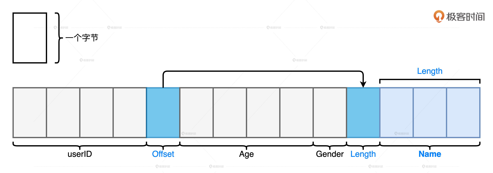
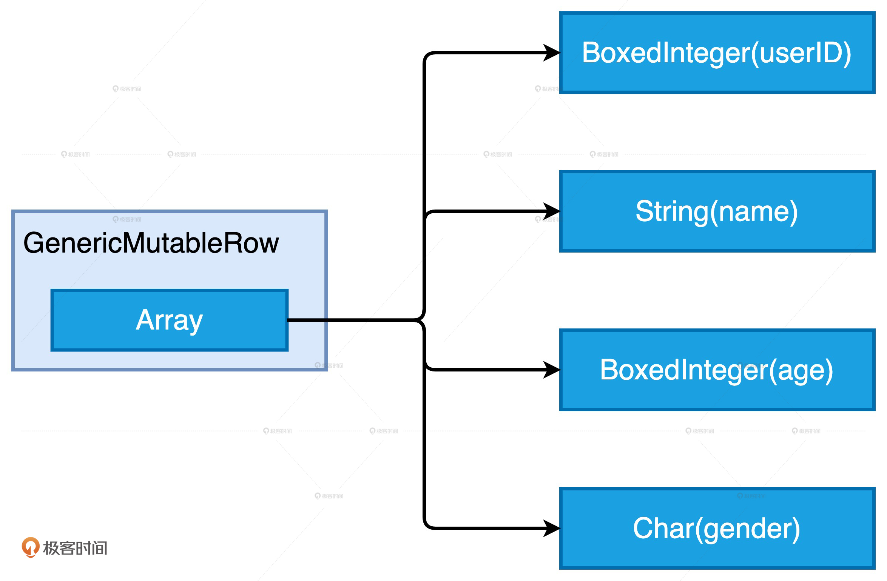
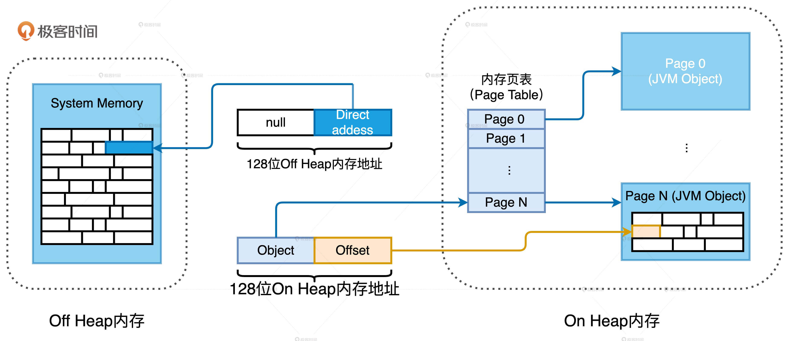
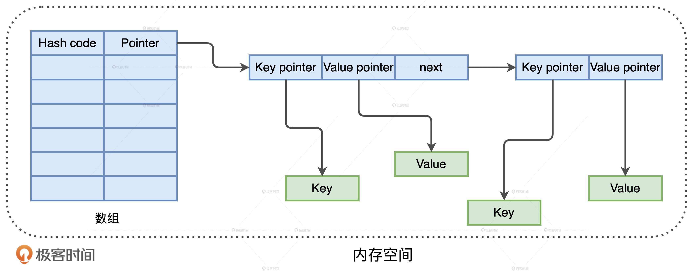
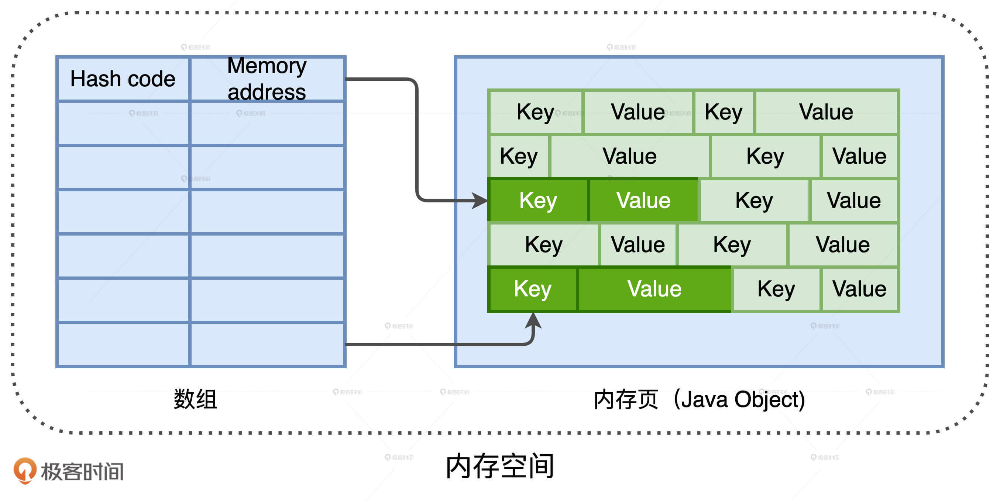
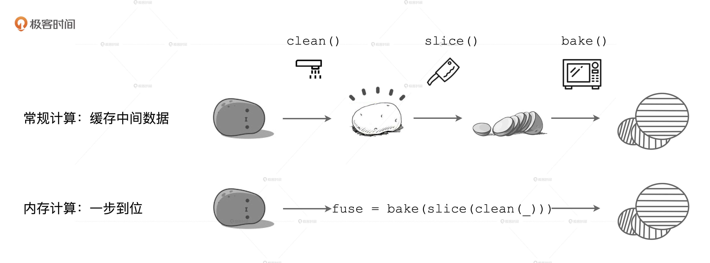
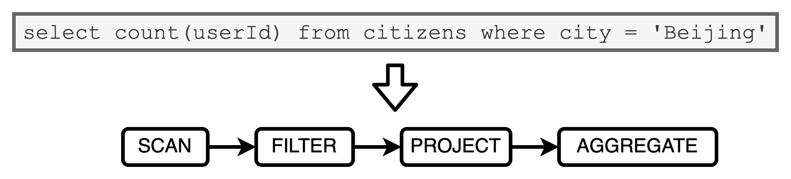
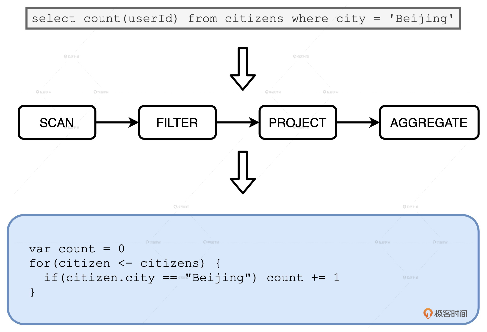
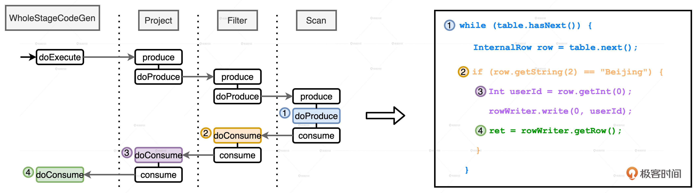

- 00 开篇词 Spark性能调优，你该掌握这些“套路”.md.html
- 01 性能调优的必要性：Spark本身就很快，为啥还需要我调优？.md.html
- 02 性能调优的本质：调优的手段五花八门，该从哪里入手？.md.html
- 03 RDD：为什么你必须要理解弹性分布式数据集？.md.html
- 04 DAG与流水线：到底啥叫“内存计算”？.md.html
- 05 调度系统：“数据不动代码动”到底是什么意思？.md.html
- 06 存储系统：空间换时间，还是时间换空间？.md.html
- 07 内存管理基础：Spark如何高效利用有限的内存空间？.md.html
- 08 应用开发三原则：如何拓展自己的开发边界？.md.html
- 09 调优一筹莫展，配置项速查手册让你事半功倍！（上）.md.html
- 10 调优一筹莫展，配置项速查手册让你事半功倍！（下）.md.html
- 11 为什么说Shuffle是一时无两的性能杀手？.md.html
- 12 广播变量（一）：克制Shuffle，如何一招制胜！.md.html
- 13 广播变量（二）：如何让Spark SQL选择Broadcast Joins？.md.html
- 14 CPU视角：如何高效地利用CPU？.md.html
- 15 内存视角（一）：如何最大化内存的使用效率？.md.html
- 16 内存视角（二）：如何有效避免Cache滥用？.md.html
- 17 内存视角（三）：OOM都是谁的锅？怎么破？.md.html
- 18 磁盘视角：如果内存无限大，磁盘还有用武之地吗？.md.html
- 19 网络视角：如何有效降低网络开销？.md.html
- 20 RDD和DataFrame：既生瑜，何生亮？.md.html
- 21 Catalyst逻辑计划：你的SQL语句是怎么被优化的？（上）.md.html
- 22 Catalyst物理计划：你的SQL语句是怎么被优化的（下）？.md.html
- 23 钨丝计划：Tungsten给开发者带来了哪些福报？.md.html
- 24 Spark 3.0（一）：AQE的3个特性怎么才能用好？.md.html
- 25 Spark 3.0（二）：DPP特性该怎么用？.md.html
- 26 Join Hints指南：不同场景下，如何选择Join策略？.md.html
- 27 大表Join小表：广播变量容不下小表怎么办？.md.html
- 28 大表Join大表（一）：什么是“分而治之”的调优思路？.md.html
- 29 大表Join大表（二）：什么是负隅顽抗的调优思路？.md.html
- 30 应用开发：北京市小客车（汽油车）摇号趋势分析.md.html
- 31 性能调优：手把手带你提升应用的执行性能.md.html
- Spark UI（上）深入解读Spark作业的“体检报告”.md.html
- Spark UI（下）：深入解读Spark作业的“体检报告”.md.html
- 期末考试 “Spark性能调优”100分试卷等你来挑战！.md.html
- 结束语 在时间面前，做一个笃定学习的人.md.html
- 捐赠
23 钨丝计划：Tungsten给开发者带来了哪些福报？
你好，我是吴磊。
通过前两讲的学习，我们知道在Spark SQL这颗智能大脑中，“左脑”Catalyst优化器负责把查询语句最终转换成可执行的Physical Plan。但是，把Physical Plan直接丢给Spark去执行并不是最优的选择，最优的选择是把它交给“右脑”Tungsten再做一轮优化。
Tungsten又叫钨丝计划，它主要围绕内核引擎做了两方面的改进：数据结构设计和全阶段代码生成（WSCG，Whole Stage Code Generation）。
今天这一讲，我们就来说说Tungsten的设计初衷是什么，它的两方面改进到底解决了哪些问题，以及它给开发者到底带来了哪些性能红利。
Tungsten在数据结构方面的设计
相比Spark Core，Tungsten在数据结构方面做了两个比较大的改进，一个是紧凑的二进制格式Unsafe Row，另一个是内存页管理。我们一个一个来说。
Unsafe Row：二进制数据结构
Unsafe Row是一种字节数组，它可以用来存储下图所示Schema为（userID，name，age，gender）的用户数据条目。总的来说，所有字段都会按照Schema中的顺序安放在数组中。其中，定长字段的值会直接安插到字节中，而变长字段会先在Schema的相应位置插入偏移地址，再把字段长度和字段值存储到靠后的元素中。更详细的例子我们在第9讲说过，你可以去看看。

那么，这种存储方式有什么优点呢？我们不妨用逆向思维来思考这个问题，如果采用JVM传统的对象方式来存储相同Schema的数据条目会发生什么。
JVM至少需要6个对象才能存储一条用户数据。其中，GenericMutableRow用于封装一条数据，Array用于存储实际的数据值。Array中的每个元素都是一个对象，如承载整型的BoxedInteger、承载字符串的String等等。这样的存储方式有两个明显的缺点。
首先，存储开销大。我们拿类型是String的name来举例，如果一个用户的名字叫做“Mike”，它本应该只占用4个字节，但在JVM的对象存储中，“Mike”会消耗总共48个字节，其中包括12个字节的对象头信息、8字节的哈希编码、8字节的字段值存储和另外20个字节的其他开销。从4个字节到48个字节，存储开销可见一斑。
其次，在JVM堆内内存中，对象数越多垃圾回收效率越低。因此，一条数据记录用一个对象来封装是最好的。但是，我们从下图中可以看到，JVM需要至少6个对象才能存储一条数据记录。如果你的样本数是1千亿的话，这意味着JVM需要管理6千亿的对象，GC的压力就会陡然上升。

我们反过来再看UnsafeRow，字节数组的存储方式在消除存储开销的同时，仅用一个数组对象就能轻松完成一条数据的封装，显著降低GC压力，可以说是一举两得。由此可见，Unsafe Row带来的潜在性能收益还是相当可观的。不过，Tungsten并未止步于此，为了统一堆外与堆内内存的管理，同时进一步提升数据存储效率与GC效率，Tungsten还推出了基于内存页的内存管理模式。
基于内存页的内存管理
为了统一管理Off Heap和On Heap内存空间，Tungsten定义了统一的128位内存地址，简称Tungsten地址。Tungsten地址分为两部分：前64位预留给Java Object，后64位是偏移地址Offset。但是，同样是128位的Tungsten地址，Off Heap和On Heap两块内存空间在寻址方式上截然不同。
对于On Heap空间的Tungsten地址来说，前64位存储的是JVM堆内对象的引用或者说指针，后64位Offset存储的是数据在该对象内的偏移地址。而Off Heap空间则完全不同，在堆外的空间中，由于Spark是通过Java Unsafe API直接管理操作系统内存，不存在内存对象的概念，因此前64位存储的是null值，后64位则用于在堆外空间中直接寻址操作系统的内存空间。
显然，在Tungsten模式下，管理On Heap会比Off Heap更加复杂。这是因为，在On Heap内存空间寻址堆内数据必须经过两步：第一步，通过前64位的Object引用来定位JVM对象；第二步，结合Offset提供的偏移地址在堆内内存空间中找到所需的数据。
JVM对象地址与偏移地址的关系，就好比是数组的起始地址与数组元素偏移地址之间的关系。给定起始地址和偏移地址之后，系统就可以迅速地寻址到数据元素。因此，在上面的两个步骤中，如何通过Object引用来定位JVM对象就是关键了。接下来，我们就重点解释这个环节。

如上图所示，Tungsten使用一种叫做页表（Page Table）的数据结构，来记录从Object引用到JVM对象地址的映射。页表中记录的是一个又一个内存页（Memory Page），内存页实际上就是一个JVM对象而已。只要给定64位的Object引用，Tungsten就能通过页表轻松拿到JVM对象地址，从而完成寻址。
那么，Tungsten使用这种方式来管理内存有什么收益呢？我们不妨以常用的HashMap数据结构为例，来对比Java标准库（java.util.HashMap）和Tungsten模式下的HashMap。

Java标准库采用数组加链表的方式来实现HashMap，如上图所示，数组元素存储Hash code和链表头。链表节点存储3个元素，分别是Key引用、Value引用和下一个元素的地址。一般来说，如果面试官要求你实现一个HashMap，我们往往也会采用这种实现方式。
但是，这种实现方式会带来两个弊端。
首先是存储开销和GC负担比较大。结合上面的示意图我们不难发现，存储数据的对象值只占整个HashMap一半的存储空间，另外一半的存储空间用来存储引用和指针，这50%的存储开销还是蛮大的。而且我们发现，图中每一个Key、Value和链表元素都是JVM对象。假设，我们用HashMap来存储一百万条数据条目，那么JVM对象的数量至少是三百万。由于JVM的GC效率与对象数量成反比，因此java.util.HashMap的实现方式对于GC并不友好。
其次，在数据访问的过程中，标准库实现的HashMap容易降低CPU缓存命中率，进而降低CPU利用率。链表这种数据结构的特点是，对写入友好，但访问低效。用链表存储数据的方式确实很灵活，这让JVM可以充分利用零散的内存区域，提升内存利用率。但是，在对链表进行全量扫描的时候，这种零散的存储方式会引入大量的随机内存访问（Random Memory Access）。相比顺序访问，随机内存访问会大幅降低CPU cache命中率。

那么，针对以上几个弊端，Tungsten又是怎么解决的呢？我们从存储开销、GC效率和CPU cache命中率分别来看。
首先，Tungsten放弃了链表的实现方式，使用数组加内存页的方式来实现HashMap。数组中存储的元素是Hash code和Tungsten内存地址，也就是Object引用外加Offset的128位地址。Tungsten HashMap使用128位地址来寻址数据元素，相比java.util.HashMap大量的链表指针，在存储开销上更低。
其次，Tungsten HashMap的存储单元是内存页，内存页本质上是Java Object，一个内存页可以存储多个数据条目。因此，相比标准库中的HashMap，使用内存页大幅缩减了存储所需的对象数量。比如说，我们需要存储一百万条数据记录，标准库的HashMap至少需要三百万的JVM对象才能存下，而Tungsten HashMap可能只需要几个或是十几个内存页就能存下。对比下来，它们所需的JVM对象数量可以说是天壤之别，显然，Tungsten的实现方式对于GC更加友好。
再者，内存页本质上是JVM对象，其内部使用连续空间来存储数据，内存页加偏移量可以精准地定位到每一个数据元素。因此，在需要扫描HashMap全量数据的时候，得益于内存页中连续存储的方式，内存的访问方式从原来的随机访问变成了顺序读取（Sequential Access）。顺序内存访问会大幅提升CPU cache利用率，减少CPU中断，显著提升CPU利用率。
如何理解WSCG？
接下来，我们再说说WSCG。首先，WSCG到底是什么？这就要提到内存计算的第二层含义了，它指的是在同一个Stage内部，把多个RDD的compute函数捏合成一个，然后把这一个函数一次性地作用在输入数据上。不过，这种捏合方式采用的是迭代器嵌套的方式。例如，土豆工坊中对于Stage0的处理，也就是下图中的fuse函数。它仅仅是clean、slice、bake三个函数的嵌套，并没有真正融合为一个函数。

WSCG指的是基于同一Stage内操作符之间的调用关系，生成一份“手写代码”，真正把所有计算融合为一个统一的函数。
什么是火山迭代模型？
那么，我们真的有必要把三个函数体融合成一个函数，甚至生成一份“手写代码”吗？迭代器嵌套的函数调用难道还不够吗？坦白说，迭代器嵌套还真不够。原因在于，迭代器嵌套的计算模式会涉及两种操作，一个是内存数据的随机存取，另一个是虚函数调用（next）。这两种操作都会降低CPU的缓存命中率，影响CPU的工作效率。这么说比较抽象，我们来举个小例子。

假设，现在有一张市民表，我们要从中统计在北京的人数。对应的语法树非常简单，从左到右，分别是数据扫描、过滤、投影和聚合。语法树先是经过“左脑”Catalyst优化器转换为Physical Plan，然后交付执行。Tungsten出现以前，Spark在运行时采用火山迭代模型来执行计算。这里，咱们需要先简单地介绍一下火山迭代模型（Volcano Iteration Model，以下简称VI模型）。
VI模型这种计算模式依托AST语法树，对所有操作符（如过滤、投影）的计算进行了统一封装，所有操作符都要实现VI模型的迭代器抽象。简单来说就是，所有操作符都需要实现hasNext和next方法。因此，VI模型非常灵活、扩展能力很强，任何一个算子只要实现了迭代器抽象，都可以加入到语法树当中参与计算。另外，为了方便操作符之间的数据交换，VI模型对所有操作符的输出也做了统一的封装。
那么，如果上面的查询使用VI模型去执行计算的话，都需要经过哪些步骤呢？对于数据源中的每条数据条目，语法树当中的每个操作符都需要完成如下步骤：
- 从内存中读取父操作符的输出结果作为输入数据
- 调用hasNext、next方法，以操作符逻辑处理数据，如过滤、投影、聚合等等
- 将处理后的结果以统一的标准形式输出到内存，供下游算子消费
因此，任意两个操作符之间的交互都会涉及我们最开始说的两个步骤，也就是内存数据的随机存取和虚函数调用，而它们正是CPU有效利用率低下的始作俑者。
WSCG的优势是什么？
Tungsten引入WSCG机制，正是为了消除VI模型引入的计算开销。这是怎么做到的呢？接下来，咱们还是以市民表的查询为例，先来直观地感受一下WSCG的优势。

对于刚刚的查询语句，WSCG会结合AST语法树中不同算子的调用关系，生成如上图所示的“手写代码”。在这份手写代码中，我们把数据端到端的计算逻辑（过滤、投影、聚合）一次性地进行了实现。
这样一来，我们利用手写代码的实现方式不仅消除了操作符，也消除了操作符的虚函数调用，更没有不同算子之间的数据交换，计算逻辑完全是一次性地应用到数据上。而且，代码中的每一条指令都是明确的，可以顺序加载到CPU寄存器，源数据也可以顺序地加载到CPU的各级缓存中，从而大幅提升了CPU的工作效率。
当然，WSCG在运行时生成的代码和我们这里举例的手写代码在形式上还有差别。不过，这也并不影响我们对于WSCG特性和优势的理解。看到这里，你可能会问：“WSCG不就是运行时的代码重构吗？”没错，本质上，WSCG机制的工作过程就是基于一份“性能较差的代码”，在运行时动态地（On The Fly）重构出一份“性能更好的代码”。
WSCG是如何在运行时动态生成代码的？
问题来了，WSCG是怎么在运行时动态生成代码的呢？
我们还是以刚刚市民表的查询为例，语法树从左到右有Scan、Filter、Project和Aggregate4个节点。不过，因为Aggregate会引入Shuffle、切割Stage，所以这4个节点会产生两个Stage。又因为WSCG是在一个Stage内部生成手写代码，所以，我们把目光集中到前三个操作符Scan、Filter和Project构成的Stage。
上一讲中我们说了，Spark Plan在转换成Physical Plan之前，会应用一系列的Preparation Rules。这其中很重要的一环就是CollapseCodegenStages规则，它的作用正是尝试为每一个Stages生成“手写代码”。
总的来说，手写代码的生成过程分为两个步骤：
- 从父节点到子节点，递归调用doProduce，生成代码框架
- 从子节点到父节点，递归调用doConsume，向框架填充每一个操作符的运算逻辑
这么说比较抽象，咱们以上面的第一个Stage为例，来直观地看看这个代码生成的过程。

首先，在Stage顶端节点也就是Project之上，添加WholeStageCodeGen节点。WholeStageCodeGen节点通过调用doExecute来触发整个代码生成过程的计算。doExecute会递归调用子节点的doProduce函数，直到遇到Shuffle Boundary为止。这里，Shuffle Boundary指的是Shuffle边界，要么是数据源，要么是上一个Stage的输出。在叶子节点（也就是Scan）调用的doProduce函数会先把手写代码的框架生成出来，如图中右侧蓝色部分的代码。
然后，Scan中的doProduce会反向递归调用每个父节点的doConsume函数。不同操作符在执行doConsume函数的过程中，会把关系表达式转化成Java代码，然后把这份代码像做“完形填空”一样，嵌入到刚刚的代码框架里。比如图中橘黄色的doConsume生成的if语句，其中包含了判断地区是否为北京的条件，以及紫色的doConsume生成了获取必需字段userId的Java代码。
就这样，Tungsten利用CollapseCodegenStages规则，经过两层递归调用把Catalyst输出的Spark Plan加工成了一份“手写代码”，并把这份手写代码会交付给DAGScheduler。拿到代码之后，DAGScheduler再去协调自己的两个小弟TaskScheduler和SchedulerBackend，完成分布式任务调度。
小结
Tungsten是Spark SQL的“右脑”，掌握它的特性和优势对SparkSQL的性能调优来说至关重要。具体来说，我们可以从它对内核引擎的两方面改进入手：数据结构设计和WSCG。
在数据结构方面，我们要掌握Tungsten的两项改进。
首先，Tungsten设计了UnsafeRow二进制字节序列来取代JVM对象的存储方式。这不仅可以提升CPU的存储效率，还能减少存储数据记录所需的对象个数，从而改善GC效率。
其次，为了统一管理堆内与堆外内存，Tungsten设计了128位的内存地址，其中前64位存储Object引用，后64位为偏移地址。
在堆内内存的管理上，基于Tungsten内存地址和内存页的设计机制，相比标准库，Tungsten实现的数据结构（如HashMap）使用连续空间来存储数据条目，连续内存访问有利于提升CPU缓存命中率，从而提升CPU工作效率。由于内存页本质上是Java Object，内存页管理机制往往能够大幅削减存储数据所需的对象数量，因此对GC非常友好的。
对于Tungsten的WSCG，我们要掌握它的概念和优势。
首先，WSCG指的是基于同一Stage内操作符之间的调用关系，生成一份“手写代码”，来把所有计算融合为一个统一的函数。本质上，WSCG机制的工作过程，就是基于一份“性能较差的代码”，在运行时动态地重构出一份“性能更好的代码”。
更重要的是，“手写代码”解决了VI计算模型的两个核心痛点：操作符之间频繁的虚函数调用，以及操作符之间数据交换引入的内存随机访问。手写代码中的每一条指令都是明确的，可以顺序加载到CPU寄存器，源数据也可以顺序地加载到CPU的各级缓存中，因此，CPU的缓存命中率和工作效率都会得到大幅提升。
每日一练
- 针对排序操作，你认为Tungsten在数据结构方面有哪些改进呢？
- 你认为表达式代码生成（Expression Codegen）和全阶段代码生成（Whole Stage Codegen）有什么区别和联系呢？
期待在留言区看到你的思考和答案，我们下一讲见！
© 2019 - 2023 Liangliang Lee. Powered by gin and hexo-theme-book.